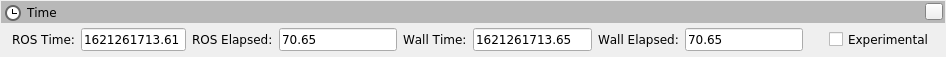

Géochelone Galactique (galactique)
Table des matières
Nouvelles fonctionnalités de cette version de ROS 2
Possibilité de spécifier des niveaux de journalisation par enregistreur
Possibilité de configurer le répertoire de journalisation via des variables d’environnement
Possibilité d’invoquer le pipeline
rosidlen dehors de CMakePossibilité de charger des fichiers de paramètres lors de l’exécution via la commande ros2
Utiliser des substitutions de lancement dans les fichiers de paramètres
Galactic Geochelone is the seventh release of ROS 2. What follows is highlights of the important changes and features in Galactic Geochelone since the last release. For a list of all of the changes since Foxy, see the long form changelog.
Plates-formes prises en charge
Galactic Geochelone est principalement pris en charge sur les plates-formes suivantes :
Plateformes de niveau 1 :
Ubuntu 20.04 (Focal) :
amd64etarm64Windows 10 (Visual Studio 2019) :
amd64
Plateformes de niveau 2 :
RHEL 8 :
amd64
Plateformes de niveau 3 :
Ubuntu 20.04 (Focal):
arm32Debian Bullseye (11) :
amd64,arm64etarm32OpenEmbedded Thud (2.6) / webOS OSE :
arm32etarm64Mac macOS 10.14 (Mojave) :
amd64
Pour plus d’informations sur les implémentations RMW, les versions du compilateur/interpréteur et les versions des dépendances système, consultez REP 2000.
Nouvelles fonctionnalités de cette version de ROS 2
Possibilité de spécifier des niveaux de journalisation par enregistreur
Il est désormais possible de spécifier différents niveaux de journalisation pour différents loggers sur la ligne de commande :
ros2 run demo_nodes_cpp talker --ros-args --log-level WARN --log-level talker:=DEBUG
La commande ci-dessus définit un niveau de journalisation global de WARN, mais définit le niveau de journalisation des messages du nœud locuteur sur DEBUG. L’option de ligne de commande --log-level peut être passée un nombre arbitraire de fois pour définir différents niveaux de journalisation pour chaque enregistreur.
Possibilité de configurer le répertoire de journalisation via des variables d’environnement
Il est désormais possible de configurer le répertoire de journalisation via deux variables d’environnement : ROS_LOG_DIR et ROS_HOME. La logique est la suivante:
Utilisez
$ROS_LOG_DIRsiROS_LOG_DIRest défini et non vide.Sinon, utilisez
$ROS_HOME/log, en utilisant~/.rospourROS_HOMEs’il n’est pas défini ou s’il est vide.
Ainsi la valeur par défaut reste la même : ~/.ros/log.
PR associés : ros2/rcl_logging#53 et ros2/launch#460.
Par exemple:
ROS_LOG_DIR=/tmp/foo ros2 run demo_nodes_cpp talker
Placera tous les journaux dans /tmp/foo.
ROS_HOME=/path/to/home ros2 run demo_nodes_cpp talker
Placera tous les journaux dans /path/to/home/log.
Possibilité d’invoquer le pipeline rosidl en dehors de CMake
Il est maintenant simple d’invoquer le pipeline de génération d’interface rosidl en dehors de CMake. Les générateurs de code source et les traducteurs de définition d’interface sont accessibles via une interface de ligne de commande unifiée.
Par exemple, étant donné un message Demo dans un package demo comme :
mkdir -p demo/msg
cd demo
cat << EOF > msg/Demo.msg
std_msgs/Header header
geometry_msgs/Twist twist
geometry_msgs/Accel accel
EOF
il est facile de générer du code source compatible C, C++ et Python :
rosidl generate -o gen -t c -t cpp -t py -I$(ros2 pkg prefix --share std_msgs)/.. \
-I$(ros2 pkg prefix --share geometry_msgs)/.. demo msg/Demo.msg
Le code source généré sera placé dans le répertoire gen.
On peut également traduire la définition du message dans un format différent pour qu’un outil de génération de code tiers l’utilise :
rosidl translate -o gen --to idl -I$(ros2 pkg prefix --share std_msgs)/.. \
-I$(ros2 pkg prefix --share geometry_msgs)/.. demo msg/Demo.msg
La définition du message traduit sera placée dans le répertoire gen.
Notez que ces outils génèrent des sources mais ne les construisent pas - cette responsabilité incombe toujours à l’appelant. Il s’agit d’un premier pas vers l’activation de la génération d’interface rosidl dans des systèmes de construction autres que CMake. Voir le document de conception pour plus de référence et les prochaines étapes.
Configurer la QoS en externe au démarrage
Il est désormais possible de configurer en externe les paramètres QoS d’un nœud au démarrage. Les paramètres QoS ne sont pas configurables pendant l’exécution ; ils ne sont configurables qu’au démarrage. Les auteurs de nœuds doivent s’inscrire pour activer la modification des paramètres QoS au démarrage. Si la fonction est activée sur un nœud, les paramètres QoS peuvent être définis avec les paramètres ROS lors du premier démarrage d’un nœud.
Des démos en C++ et Python peuvent être trouvées ici.
Voir le document de conception pour plus de détails.
Notez que le code utilisateur gérant les modifications de paramètres avec des rappels enregistrés doit éviter de rejeter les mises à jour pour des paramètres inconnus. C’était considéré comme une mauvaise pratique avant Galactic, mais si la QoS configurable en externe est activée, cela entraînera une panne matérielle.
PR associés : ros2/rclcpp#1408 et ros2/rclpy#635
Utilitaires Python point_cloud2 disponibles
Plusieurs utilitaires permettant d’interagir avec les messages PointCloud2 en Python ont été portés sur ROS 2. Ces utilitaires permettent d’obtenir une liste de points à partir d’un message PointCloud2 (read_points et read_points_list), et de créer un message PointCloud2 à partir d’une liste de points (create_cloud et ``create_cloud_xyz32` `).
Un exemple de création d’un message PointCloud 2, puis de sa relecture :
import sensor_msgs_py.point_cloud2
from std_msgs.msg import Header
pointlist = [[0.0, 0.1, 0.2]]
pointcloud = sensor_msgs_py.point_cloud2.create_cloud_xyz32(Header(frame_id='frame'), pointlist)
for point in sensor_msgs_py.point_cloud2.read_points(pointcloud):
print(point)
Panneau de temps RViz2
Le panneau de temps Rviz2, qui affiche l’heure actuelle du mur et du ROS, ainsi que le temps écoulé du mur et du ROS, a été porté sur RViz2. Pour activer le panneau de temps, cliquez sur Panneaux -> Ajouter un nouveau panneau, et sélectionnez « Heure ». Un panneau qui ressemble à ce qui suit apparaîtra :
ros2 topic echo peut imprimer des données sérialisées
Lors du débogage de problèmes de middleware, il peut être utile de voir les données brutes sérialisées que le RMW envoie. L’indicateur de ligne de commande –raw a été ajouté à ros2 topic echo pour afficher ces données. Pour voir cela en action, exécutez les commandes suivantes.
Terminal 1:
$ ros2 topic pub /chatter std_msgs/msg/String "data: 'hello'"
Terminal 2:
$ ros2 topic echo --raw /chatter
b'\x00\x01\x00\x00\x06\x00\x00\x00hello\x00\x00\x00'
---
Obtenir la représentation YAML des messages
Il est maintenant possible d’obtenir une représentation YAML de tous les messages en C++ en utilisant la fonction to_yaml. Un exemple de code qui imprime la représentation YAML :
#include <cstdio>
#include <std_msgs/msg/string.hpp>
int main()
{
std_msgs::msg::String msg;
msg.data = "hello world";
printf("%s", rosidl_generator_traits::to_yaml(msg).c_str());
return 0;
}
Possibilité de charger des fichiers de paramètres lors de l’exécution via la commande ros2
ROS 2 a depuis longtemps la possibilité de spécifier des valeurs de paramètres au démarrage (via des arguments de ligne de commande ou un fichier YAML) et de vider les paramètres actuels dans un fichier (via ros2 param dump). Galactic ajoute la possibilité de charger les valeurs des paramètres au moment de l’exécution à partir d’un fichier YAML à l’aide du verbe ros2 param load. Par exemple:
Terminal 1:
$ ros2 run demo_nodes_cpp parameter_blackboard
Terminal 2:
$ ros2 param set /parameter_blackboard foo bar # sets 'foo' parameter to value 'bar'
$ ros2 param dump /parameter_blackboard # dumps current value of parameters to ./parameter_blackboard.yaml
$ ros2 param set /parameter_blackboard foo different # sets 'foo' parameter to value 'different'
$ ros2 param load /parameter_blackboard ./parameter_blackboard.yaml # reloads previous state of parameters, 'foo' is back to 'bar'
Outils pour vérifier les incompatibilités QoS
Construits sur de nouvelles API de vérification de compatibilité QoS, ros2doctor et rqt_graph peuvent désormais détecter et signaler les incompatibilités QoS entre les éditeurs et les abonnements.
Étant donné un éditeur et un abonnement avec des paramètres QoS incompatibles :
Terminal 1:
$ ros2 run demo_nodes_py talker_qos -n 1000 # i.e. best_effort publisher
Terminal 2:
$ ros2 run demo_nodes_py listener_qos --reliable -n 1000 # i.e. reliable subscription
ros2doctor rapporte :
$ ros2 doctor --report
# ...
QOS COMPATIBILITY LIST
topic [type] : /chatter [std_msgs/msg/String]
publisher node : talker_qos
subscriber node : listener_qos
compatibility status : ERROR: Best effort publisher and reliable subscription;
# ...
tandis que rqt_graph affiche :

PR associés : ros2/ros2cli#621, ros-visualization/rqt_graph#61
Utiliser des substitutions de lancement dans les fichiers de paramètres
Tout comme les balises rosparam dans ROS 1 roslaunch, launch_ros peut désormais évaluer les substitutions dans les fichiers de paramètres.
Par exemple, étant donné certains parameter_file_with_substitutions.yaml comme suit :
/**:
ros__parameters:
launch_date: $(command date)
Définissez allow_substs sur True pour que les substitutions soient évaluées lors du lancement de Node :
import launch
import launch_ros.parameter_descriptions
import launch_ros.actions
def generate_launch_description():
return launch.LaunchDescription([
launch_ros.actions.Node(
package='demo_nodes_cpp',
executable='parameter_blackboard',
parameters=[
launch_ros.parameter_descriptions.ParameterFile(
param_file='parameter_file_with_substitutions.yaml',
allow_substs=True)
]
)
])
Les fichiers de lancement XML le prennent également en charge.
<launch>
<node pkg="demo_nodes_cpp" exec="parameter_blackboard">
<param from="parameter_file_with_substitutions.yaml" allow_substs="true"/>
</node>
</launch>
PR associé : ros2/launch_ros#168
Prise en charge des flux réseau uniques
Les applications peuvent désormais nécessiter des implémentations UDP/TCP et RMW basées sur IP pour fournir des flux réseau uniques (c’est-à-dire des Differentiated Services Code Points et/ou uniques ` Étiquettes de flux IPv6 <https://tools.ietf.org/html/rfc6437>`_ et/ou ports uniques dans les en-têtes de paquets IP) pour les éditeurs et les abonnements, permettant des spécifications QoS pour ces flux IP dans les architectures réseau qui prennent en charge une telle fonctionnalité , comme les réseaux 5G.
Pour voir cela en action, vous pouvez exécuter ces exemples C++ (qui se trouvent dans le dépôt ros2/examples):
Terminal 1:
ros2 run examples_rclcpp_minimal_publisher publisher_member_function_with_unique_network_flow_endpoints
Terminal 2:
ros2 run examples_rclcpp_minimal_subscriber subscriber_member_function_with_unique_network_flow_endpoints
Voir le document de conception Unique Network Flows pour plus de références.
Nouvelles fonctionnalités de Rosbag2
Diviser l’enregistrement par le temps
Dans Foxy, vous ne pouviez diviser les sacs qu’au fur et à mesure qu’ils enregistraient par la taille du sac, maintenant vous pouvez également diviser par le temps écoulé. La commande suivante divisera les bagfiles en morceaux de 100 secondes.
ros2 bag record --all --max-bag-duration 100
liste de sacs ros2
Cette nouvelle commande répertorie les plugins installés de différents types utilisés par rosbag2.
$ ros2 bag list storage
rosbag2_v2
sqlite3
$ ros2 bag list converter
rosbag_v2_converter
L’implémentation de la compression est un plugin
Dans Foxy, la compression rosbag2 était codée en dur avec une implémentation de bibliothèque Zstd. Cela a été repensé pour que les implémentations de compression soient un plug-in et puissent être remplacées sans modifier la base de code rosbag2 principale. Le plugin par défaut fourni avec ros-galactic-rosbag2 est toujours le plugin Zstd - mais maintenant, d’autres peuvent être publiés et utilisés, et en installant sélectivement des packages, Zstd pourrait être exclu d’une installation.
Compresser par message
Dans Foxy, vous pouvez compresser automatiquement chaque fichier rosbag lorsqu’il a été divisé (compression par fichier), mais vous pouvez désormais également spécifier une compression par message.
ros2 bag record --all --compression-format zstd --compression-mode message
API Python Rosbag2
Un nouveau package rosbag2_py a été publié dans Galactic, qui fournit une API Python. Ce paquet est une liaison pybind11 autour de l’API C++. Depuis la version initiale de Galactic, il n’expose pas encore toutes les fonctionnalités disponibles via l’API rosbag2_cpp, mais c’est la seule connexion pour l’outil CLI ros2 bag, donc de nombreuses fonctionnalités sont disponibles.
package de test de performances et améliorations des performances
Un projet approfondi d’analyse des performances a été réalisé sur rosbag2 depuis la sortie de Foxy. Le rapport initial complet est disponible sur https://github.com/ros2/rosbag2/blob/galactic/rosbag2_performance/rosbag2_performance_benchmarking/docs/rosbag2_performance_improvements.pdf . Le package rosbag2_performance_benchmarking fournit des outils pour exécuter des analyses de performances, en particulier sur l’enregistrement, ce qui nous aide à maintenir et à améliorer les performances de rosbag2.
Suite à ce rapport, un travail clé a été effectué pour améliorer les performances à un état beaucoup plus utilisable pour les flux de travail réels des robots. Pour mettre en évidence une métrique clé - dans un test de résistance à bande passante élevée (200 Mbps), la version Foxy a laissé tomber jusqu’à 70% des messages, alors que la version Galactic était d’environ 100% de rétention. Veuillez consulter le rapport lié pour plus de détails.
Options --regex et --exclude pour la sélection de sujet
Les nouvelles options d’enregistrement --regex et --exclude permettent d’affiner les sujets enregistrés dans un sac, sans avoir à lister explicitement tous les sujets. Ces options peuvent être utilisées ensemble ou séparément, et en conjonction avec --all
La commande suivante n’enregistrera que les sujets avec « scan » dans le nom.
ros2 bag record --regex "*scan*"
La commande suivante enregistrera tous les sujets sauf ceux dans /my_namespace/
ros2 bag record --all --exclude "/my_namespace/*"
réindexation du sac ros2
Les sacs ROS 2 sont représentés par un répertoire, au lieu d’un fichier unique. Ce répertoire contient un fichier metadata.yaml et un ou plusieurs fichiers bag. Lorsque le fichier metadata.yaml est perdu ou manquant, ros2 bag reindex $bag_dir tentera de le reconstruire en lisant tous les fichiers du sac dans le répertoire.
Contrôle du temps de lecture
De nouvelles commandes ont été ajoutées pour la lecture de rosbag2 - pause et reprise, changement de vitesse et lecture suivante. Depuis la version Galactic, ces contrôles sont exposés uniquement en tant que services sur le nœud du lecteur rosbag2. Le développement est en cours pour les exposer également aux commandes du clavier dans ros2 bag play, mais jusque-là, une application utilisateur avec des boutons ou des commandes au clavier peut être implémentée de manière triviale pour appeler ces services.
# In one shell
$ ros2 bag play my_bag
# In another shell
$ ros2 service list -t
/rosbag2_player/get_rate [rosbag2_interfaces/srv/GetRate]
/rosbag2_player/is_paused [rosbag2_interfaces/srv/IsPaused]
/rosbag2_player/pause [rosbag2_interfaces/srv/Pause]
/rosbag2_player/play_next [rosbag2_interfaces/srv/PlayNext]
/rosbag2_player/resume [rosbag2_interfaces/srv/Resume]
/rosbag2_player/set_rate [rosbag2_interfaces/srv/SetRate]
/rosbag2_player/toggle_paused [rosbag2_interfaces/srv/TogglePaused]
# Check if playback is paused
$ ros2 service call /rosbag2_player/is_paused rosbag2_interfaces/IsPaused
# Pause playback
$ ros2 service call /rosbag2_player/pause rosbag2_interfaces/Pause
# Resume playback
$ ros2 service call /rosbag2_player/resume rosbag2_interfaces/Resume
# Change the paused state of playback to its opposite. If playing, pauses. If paused, resumes.
$ ros2 service call /rosbag2_player/toggle_paused rosbag2_interfaces/TogglePaused
# Get the current playback rate
$ ros2 service call /rosbag2_player/get_rate
# Set the current playback rate (must be > 0)
$ ros2 service call /rosbag2_player/set_rate rosbag2_interfaces/SetRate "rate: 0.1"
# Play a single next message (only works while paused)
$ ros2 service call /rosbag2_player/play_next rosbag2_interfaces/PlayNext
La lecture publie /horloge
Rosbag2 peut également dicter le « temps de simulation » en publiant dans le sujet /clock pendant la lecture. Les commandes suivantes publieront le message d’horloge à intervalle régulier.
# Publish at default rate - 40Hz
ros2 bag play my_bag --clock
# Publish at specific rate - 100Hz
ros2 bag play my_bag --clock 100
Changements depuis la sortie de Foxy
RMW par défaut remplacé par Eclipse Cyclone DDS
Au cours du processus de développement de Galactic, le comité directeur technique de ROS 2 a voté <https://discourse.ros.org/t/ros-2-galactic-default-middleware-announced/18064>`__ pour modifier le middleware ROS par défaut ( RMW) au projet Eclipse Cyclone DDS de la Fondation Eclipse. Sans aucun changement de configuration, les utilisateurs obtiendront Eclipse Cyclone DDS par défaut. Fast DDS et Connext sont toujours des fournisseurs de RMW pris en charge au niveau 1, et les utilisateurs peuvent choisir d’utiliser l’un de ces RMW à leur discrétion en utilisant la variable d’environnement RMW_IMPLEMENTATION. Consultez le Guide de travail avec plusieurs implémentations RMW pour plus d’informations.
Connect RMW remplacé par rmw connext dds
Un nouveau RMW pour Connext appelé rmw_connextdds a été fusionné pour Galactic. Ce RMW a de meilleures performances et résout de nombreux problèmes avec l’ancien RMW rmw_connext_cpp.
De grandes améliorations dans les tests et la qualité globale
Galactic contient de nombreuses modifications qui corrigent les conditions de concurrence, colmatent les fuites de mémoire et corrigent les problèmes signalés par les utilisateurs. Outre ces changements, il y a eu un effort concerté pendant le développement de Galactic pour améliorer la qualité globale du système en mettant en œuvre REP 2004. Le package rclcpp et toutes ses dépendances (qui incluent la plupart des packages de base ROS 2 non-Python) ont été portés au niveau de qualité 1 par :
Avoir une politique de version (exigence QL1 1)
Avoir un processus documenté de contrôle des changements (exigence QL1 2)
Documenter toutes les fonctionnalités et les API publiques (exigence QL1 3)
Ajout de nombreux tests supplémentaires (NQ1 exigence 4) :
Tests système pour toutes les fonctionnalités
Tests unitaires pour toutes les API publiques
Tests de performances nocturnes
Couverture du code à 95 %
Avoir toutes les dépendances d’exécution des packages au moins aussi élevées que le package (exigence QL1 5)
Prise en charge de toutes les plates-formes REP-2000 (exigence QL1 6)
Avoir une politique de divulgation des vulnérabilités (exigence QL1 7)
rmw
Nouvelle API pour vérifier la compatibilité du profil QoS
rmw_qos_profile_check_compatible est une nouvelle fonction permettant de vérifier la compatibilité de deux profils QoS.
Les fournisseurs RMW doivent implémenter cette API pour que les fonctionnalités de débogage et d’introspection QoS dans des outils tels que rqt_graph fonctionnent correctement.
PR associé : ros2/rmw#299
current_cmake
ament_install_python_package() installe maintenant un oeuf Python
En installant un œuf Python plat, les packages Python installés à l’aide de ament_install_python_package() peuvent être découverts à l’aide de modules tels que pkg_resources et `importlib.metadata. De plus, des métadonnées supplémentaires peuvent être fournies dans un fichier setup.cfg (y compris les points d’entrée).
Relations publiques associées : ament/ament_cmake#326
ament_target_dependencies() gère les dépendances SYSTEM
Certaines dépendances de package peuvent désormais être marquées comme dépendances SYSTEM, ce qui permet de gérer les avertissements dans le code externe. En règle générale, les dépendances SYSTEM sont également exclues des calculs de dépendance - utilisez-les avec précaution.
Relations publiques associées : ament/ament_cmake#297
tf2_ros Python séparé de tf2_ros
Le code Python qui vivait dans tf2_ros a été déplacé dans son propre package nommé tf2_ros_py. Tout code Python existant qui dépend de tf2_ros continuera à fonctionner, mais le package.xml de ces packages doit être modifié en exec_depend sur tf2_ros_py.
tf2_ros Python TransformListener utilise l’espace de noms global
Le Python TransformListener s’abonne maintenant à /tf et /tf_static dans l’espace de noms global. Auparavant, il s’inscrivait dans l’espace de noms du nœud. Cela signifie que l’espace de noms du nœud n’aura plus d’effet sur les abonnements /tf et /tf_static.
Par exemple:
ros2 run tf2_ros tf2_echo --ros-args -r __ns:=/test -- odom base_link
s’abonnera à /tf et /tf_static, comme le montrera ros2 topic list.
Relations publiques associées : ros2/geometry2#390
RCLCP
Modification des paramètres du modèle spin_until_future_complete
Le premier paramètre de modèle de Executor::spin_until_future_complete était le type de résultat futur ResultT, et la méthode n’acceptait qu’un std::shared_future<ResultT>. Afin d’accepter d’autres types de contrats à terme (par exemple : std::future), ce paramètre a été remplacé par le type de contrat à terme lui-même.
Aux endroits où un appel spin_until_future_complete s’appuyait sur la déduction d’arguments de modèle, aucun changement n’est nécessaire. Sinon, voici un exemple de diff :
std::shared_future<MyResultT> future;
...
-executor.spin_until_future_complete<MyResultT>(future);
+executor.spin_until_future_complete<std::shared_future<MyResultT>>(future);
Pour plus de détails, voir ros2/rclcpp#1160. Pour un exemple des changements nécessaires dans le code utilisateur, voir ros-visualization/interactive_markers#72.
Modification du profil QoS d’abonnement /clock par défaut
La valeur par défaut est passée d’une communication fiable avec une profondeur d’historique de 10 à une communication au mieux avec une profondeur d’historique de 1. Voir ros2/rclcpp#1312.
API d’attente
L’API Waitable a été modifiée pour éviter les problèmes avec le MultiThreadedExecutor. Cela n’affecte que les utilisateurs implémentant un waitable personnalisé. Voir ros2/rclcpp#1241 pour plus de détails.
Modification des macros de journalisation de rclcpp
Auparavant, les macros de journalisation étaient vulnérables à une attaque par chaîne de format, où la chaîne de format est évaluée et peut potentiellement exécuter du code, lire la pile ou provoquer une erreur de segmentation dans le programme en cours d’exécution. Pour résoudre ce problème de sécurité, la macro de journalisation accepte désormais uniquement les littéraux de chaîne pour son argument de chaîne de format.
Si vous aviez auparavant un code comme:
const char *my_const_char_string format = "Foo";
RCLCPP_DEBUG(get_logger(), my_const_char_string);
vous devez maintenant le remplacer par :
const char *my_const_char_string format = "Foo";
RCLCPP_DEBUG(get_logger(), "%s", my_const_char_string);
ou:
RCLCPP_DEBUG(get_logger(), "Foo");
Cette modification supprime certaines fonctionnalités des macros de journalisation, car std::strings ne sont plus acceptés comme argument de format.
Si vous aviez précédemment du code sans arguments de format comme :
std::string my_std_string = "Foo";
RCLCPP_DEBUG(get_logger(), my_std_string);
vous devez maintenant le remplacer par :
std::string my_std_string = "Foo";
RCLCPP_DEBUG(get_logger(), "%s", my_std_string.c_str());
Note
Si vous utilisez un std::string comme chaîne de format avec des arguments de format, convertir cette chaîne en char * et l’utiliser comme chaîne de format produira un avertissement de sécurité de format. C’est parce que le compilateur n’a aucun moyen à la compilation d’introspecter le std::string pour vérifier les arguments. Pour éviter l’avertissement de sécurité, nous vous recommandons de créer la chaîne manuellement et de la transmettre sans argument de format comme dans l’exemple précédent.
Les types std::stringstream sont toujours acceptés comme arguments des macros de journalisation de flux. Voir ros2/rclcpp#1442 pour plus de détails.
Les types de paramètres sont désormais statiques par défaut
Auparavant, le type d’un paramètre pouvait être modifié lorsqu’un paramètre était défini. Par exemple, si un paramètre a été déclaré comme un entier, un appel ultérieur pour définir le paramètre pourrait changer ce type en une chaîne. Ce comportement peut entraîner des bogues et correspond rarement à ce que l’utilisateur souhaite. À partir de Galactic, les types de paramètres sont statiques par défaut et les tentatives de modification de type échoueront. Si le comportement dynamique précédent est souhaité, il existe un mécanisme pour l’activer (voir le code ci-dessous).
// declare integer parameter with default value, trying to set it to a different type will fail.
node->declare_parameter("my_int", 5);
// declare string parameter with no default and mandatory user provided override.
// i.e. the user must pass a parameter file setting it or a command line rule -p <param_name>:=<value>
node->declare_parameter("string_mandatory_override", rclcpp::PARAMETER_STRING);
// Conditionally declare a floating point parameter with a mandatory override.
// Useful when the parameter is only needed depending on other conditions and no default is reasonable.
if (mode == "modeA") {
node->declare_parameter("conditionally_declare_double_parameter", rclcpp::PARAMETER_DOUBLE);
}
// You can also get the old dynamic typing behavior if you want:
rcl_interfaces::msg::ParameterDescriptor descriptor;
descriptor.dynamic_typing = true;
node->declare_parameter("dynamically_typed_param", rclcpp::ParameterValue{}, descriptor);
Pour plus de détails, voir https://github.com/ros2/rclcpp/blob/galactic/rclcpp/doc/notes_on_statically_typed_parameters.md.
Nouvelle API pour vérifier la compatibilité du profil QoS
qos_check_compatible est une nouvelle fonction permettant de vérifier la compatibilité de deux profils QoS.
PR associé : ros2/rclcpp#1554
rclpy
Suppression de Node.set_parameters_callback obsolète
La méthode Node.set_parameters_callback était obsolète dans ROS Foxy et a été supprimée dans ROS Galactic. Utilisez Node.add_on_set_parameters_callback() à la place. Voici un exemple de code l’utilisant.
import rclpy
import rclpy.node
from rcl_interfaces.msg import ParameterType
from rcl_interfaces.msg import SetParametersResult
rclpy.init()
node = rclpy.node.Node('callback_example')
node.declare_parameter('my_param', 'initial value')
def on_parameter_event(parameter_list):
for parameter in parameter_list:
node.get_logger().info(f'Got {parameter.name}={parameter.value}')
return SetParametersResult(successful=True)
node.add_on_set_parameters_callback(on_parameter_event)
rclpy.spin(node)
Exécutez cette commande pour voir le rappel de paramètre en action.
ros2 param set /callback_example my_param "Hello World"
Les types de paramètres sont désormais statiques par défaut
Dans Foxy et les versions antérieures, un appel pour définir un paramètre pouvait changer son type. À partir de Galactic, les types de paramètres sont statiques et ne peuvent pas être modifiés par défaut. Si le comportement précédent est souhaité, définissez dynamic_typing sur true dans le descripteur de paramètre. Voici un exemple.
import rclpy
import rclpy.node
from rcl_interfaces.msg import ParameterDescriptor
rclpy.init()
node = rclpy.node.Node('static_param_example')
node.declare_parameter('static_param', 'initial value')
node.declare_parameter('dynamic_param', 'initial value', descriptor=ParameterDescriptor(dynamic_typing=True))
rclpy.spin(node)
Exécutez ces commandes pour voir en quoi les paramètres typés statiquement et dynamiquement sont différents.
$ ros2 param set /static_param_example dynamic_param 42
Set parameter successful
$ ros2 param set /static_param_example static_param 42
Setting parameter failed: Wrong parameter type, expected 'Type.STRING' got 'Type.INTEGER'
Pour plus de détails, voir https://github.com/ros2/rclcpp/blob/galactic/rclcpp/doc/notes_on_statically_typed_parameters.md.
Nouvelle API pour vérifier la compatibilité du profil QoS
rclpy.qos.qos_check_compatible est une nouvelle fonction pour vérifier la compatibilité de deux profils QoS. Si les profils sont compatibles, un éditeur et un abonné les utilisant pourront se parler.
import rclpy.qos
publisher_profile = rclpy.qos.qos_profile_sensor_data
subscription_profile = rclpy.qos.qos_profile_parameter_events
print(rclpy.qos.qos_check_compatible(publisher_profile, subscription_profile))
$ python3 qos_check_compatible_example.py
(QoSCompatibility.ERROR, 'ERROR: Best effort publisher and reliable subscription;')
rclcpp_action
La signature de rappel de réponse à l’objectif du client d’action a été modifiée
Le rappel de réponse d’objectif doit désormais prendre un pointeur partagé vers un descripteur d’objectif, au lieu d’un futur.
Par example, ancienne signature :
void goal_response_callback(std::shared_future<GoalHandleFibonacci::SharedPtr> future)
Nouvelle signature :
void goal_response_callback(GoalHandleFibonacci::SharedPtr goal_handle)
PR associé : ros2/rclcpp#1311
rosidl_typesupport_introspection_c
Rupture d’API dans la fonction qui obtient un élément d’un tableau
La signature de la fonction a été modifiée car elle était sémantiquement différente de toutes les autres fonctions utilisées pour obtenir un élément d’un tableau ou d’une séquence. Cela n’affecte que les auteurs d’implémentations rmw utilisant le support de type d’introspection.
Pour plus de détails, voir ros2/rosidl#531.
rcl_lifecycle et rclcpp_lifecycle
La machine d’état du cycle de vie de RCL reçoit une nouvelle API d’initialisation
La machine d’état du cycle de vie dans rcl_lifecycle a été modifiée pour attendre une structure d’options nouvellement introduite, combinant des configurations générales pour la machine d’état. La structure d’option permet d’indiquer si la machine d’état doit être initialisée avec des valeurs par défaut, si ses services attachés sont actifs et quel allocateur utiliser.
rcl_ret_t
rcl_lifecycle_state_machine_init(
rcl_lifecycle_state_machine_t * state_machine,
rcl_node_t * node_handle,
const rosidl_message_type_support_t * ts_pub_notify,
const rosidl_service_type_support_t * ts_srv_change_state,
const rosidl_service_type_support_t * ts_srv_get_state,
const rosidl_service_type_support_t * ts_srv_get_available_states,
const rosidl_service_type_support_t * ts_srv_get_available_transitions,
const rosidl_service_type_support_t * ts_srv_get_transition_graph,
const rcl_lifecycle_state_machine_options_t * state_machine_options);
La machine d’état du cycle de vie de RCL stocke l’instance d’allocateur
La structure d’options (discutée ci-dessus) implique qu’une instance de l’allocateur est utilisée pour initialiser la machine d’état. Cette structure d’options et l’allocateur incorporé sont stockés dans la machine d’état du cycle de vie. En conséquence directe, la fonction rcl_lifecycle_fini n’attend plus d’allocateur dans sa fonction fini mais utilise plutôt l’allocateur défini dans la structure d’options pour désallouer ses structures de données internes.
rcl_ret_t
rcl_lifecycle_state_machine_fini(
rcl_lifecycle_state_machine_t * state_machine,
rcl_node_t * node_handle);
Le nœud de cycle de vie du RCLCPP expose l’option de ne pas instancier les services
Afin d’utiliser les nœuds du cycle de vie de rclcpp sans exposer ses services internes tels que change_state, get_state et. Al., le constructeur d’un nœud de cycle de vie a un paramètre nouvellement introduit indiquant si les services doivent être disponibles ou non. Cet indicateur booléen est défini sur vrai par défaut, ne nécessitant aucune modification de l’API existante si cela n’est pas souhaité.
explicit LifecycleNode(
const std::string & node_name,
const rclcpp::NodeOptions & options = rclcpp::NodeOptions(),
bool enable_communication_interface = true);
PR associés : ros2/rcl#882 et ros2/rclcpp#1507
rcl_lifecycle et rclcpp_lifecycle
Enregistrement - Fractionné par le temps
Problèmes connus
Votre gagne-pain
Daemon ralentit la CLI sous Windows
Pour contourner ce problème, les commandes CLI peuvent être utilisées sans démon, par exemple :
ros2 topic list --no-daemon
Le problème est suivi par ros2/ros2cli#637.
ryat
Certaines icônes rqt_bag sont manquantes
Les icônes « Zoom In », « Zoom Out », « Zoom Home » et « Toggle Thumbnails » manquent dans rqt_bag. Le problème est suivi dans ros-visualization/rqt_bag#102
La plupart des utilitaires rqt ne fonctionnent pas de manière autonome sous Windows
Lancer les utilitaires rqt « standalone » sous Windows (comme ros2 run rqt_graph rqt_graph) ne fonctionne généralement pas. La solution consiste à lancer le processus de conteneur rqt (rqt), puis à insérer les plugins à utiliser.
Réviser
Les boutons de fermeture du panneau RViz2 sont vides
Le coin supérieur droit de chaque panneau RViz2 doit contenir un « X » pour permettre de fermer le panneau. Ces boutons sont là, mais le « X » à l’intérieur d’eux manque sur toutes les plateformes. Le problème est suivi dans ros2/rviz2#692.
Chronologie avant la sortie
- Mon. March 22, 2021 - Alpha
Tests préliminaires et stabilisation des packages ROS Core 1.
- Lun. 5 avril 2021 - Gel
API et gel des fonctionnalités pour les packages ROS Core 1 dans Rolling Ridley. Notez que cela inclut
rmw, qui est une dépendance récursive deros_core. Seules les versions de correctifs de bogues doivent être effectuées après ce point. De nouveaux packages peuvent être publiés indépendamment.- Mon. April 19, 2021 - Branch
Succursale de Rolling Ridley.
rosdistroest rouvert pour Rolling PRs pour les packages ROS Core 1. Le développement galactique passe des packagesros-rolling-*aux packagesros-galactic-*.- Mon. April 26, 2021 - Beta
Versions mises à jour des packages ROS Desktop 2 disponibles. Appel pour des tests généraux.
- Mon. May 17, 2021 - RC
- Les packages Release Candidate sont créés.
Versions mises à jour des packages ROS Desktop 2 disponibles.
- Jeu. 20 mai 2021 - Distro Freeze
Geler rosdistro. Aucun PR pour Galactic sur le repo
rosdistrone sera fusionné (réouverture après l’annonce de la sortie).- Soleil. 23 mai 2021 - Disponibilité générale
- Annonce de sortie.
rosdistroest rouvert pour les relations publiques galactiques.
- 1(1,2,3)
La variante
ros_coreest décrite dans REP 2001 (ros-core).- 2(1,2)
La variante
desktopest décrite dans REP 2001 (desktop-variants).